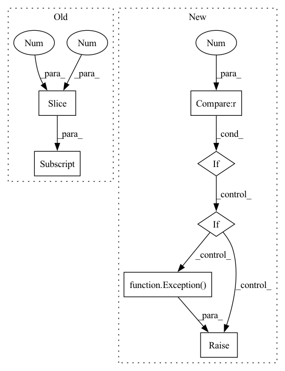

Pattern ID :28637
Before Change
annotations = items[item_id].annotations
for caption in captions:
if caption[0] == "\"" and caption[-1] == "\"":
caption = caption[1:-1]
annotations.append(Caption(caption))
return items
After Change
if len(objects) == 2:
image = objects[0]
objects = objects[1].split("\"")
if 1 < len(objects) :
if len(objects) % 2:
captions = [objects[2 * i + 1]
for i in range(int(len(objects) / 2))]
else:
raise Exception( "Line %s: unexpected number "
"of quotes in filename" % line)
else:
captions = objects[0].split()
else:
image = objects[0][:-1]In pattern: SUPERPATTERN
Frequency: 3
Non-data size: 7
Instances Fragment ID: 84540201
Project Name: openvinotoolkit/datumaro
Commit Name: 7a66b5e9de8f0e2cdbdedc28f23b60172284ec27
Time: 2021-03-24
Author: anastasia.yasakova@intel.com
File Name: datumaro/plugins/icdar_format/extractor.py
M Class Name: _IcdarExtractor
N Class Name: _IcdarExtractor
M Method Name: _load_recognition_items(1)
N Method Name: _load_recognition_items(1)
M Parent Class: SourceExtractor
N Parent Class: SourceExtractor
M File Name: datumaro/plugins/icdar_format/extractor.py
N File Name: datumaro/plugins/icdar_format/extractor.py
M Start Line: 60
M End Line: 76
N Start Line: 56
N End Line: 70
Before Change
R_ = param[:12].reshape(3, -1)
R = R_[:, :3]
offset = R_[:, -1].reshape(3, 1)
alpha_shp = param[12:52] .reshape(-1, 1)
alpha_exp = param[52:].reshape(-1, 1)
return R, offset, alpha_shp, alpha_expAfter Change
// pre-defined templates for parameter
n = param.shape[0]
if n == 62 :
trans_dim, shape_dim, exp_dim = 12, 40, 10
elif raise Exception( f"Undefined templated param parsing rule")
R_ = param[:trans_dim].reshape(3, -1)
R = R_[:, :3]
offset = R_[:, -1].reshape(3, 1) Fragment ID: 84540203
Project Name: cleardusk/3ddfa_v2
Commit Name: 82c3b1c119f0eedd2d56885867105ec902c5744d
Time: 2020-10-04
Author: guojianzhu1994@foxmail.com
File Name: utils/tddfa_util.py
M Class Name: AnonimousClass
N Class Name: AnonimousClass
M Method Name: _parse_param(1)
N Method Name: _parse_param(1)
M Parent Class:
N Parent Class:
M File Name: utils/tddfa_util.py
N File Name: utils/tddfa_util.py
M Start Line: 90
M End Line: 94
N Start Line: 86
N End Line: 100
Before Change
if len(objects) == 5:
text = objects[4]
if text[0] == "\"" and text[-1] == "\"":
text = text[1:-1]
attributes["text"] = text
annotations.append(
Bbox(x, y, w, h, attributes=attributes))After Change
for line in f:
line = line.strip()
objects = line.split("\"")
if 1 < len(objects) :
if len(objects) == 3:
text = objects[1]
else:
raise Exception( "Line %s: unexpected number "
"of quotes in filename" % line)
else:
text = ""
objects = objects[0].split()
if len(objects) == 1: Fragment ID: 84540206
Project Name: openvinotoolkit/datumaro
Commit Name: 7a66b5e9de8f0e2cdbdedc28f23b60172284ec27
Time: 2021-03-24
Author: anastasia.yasakova@intel.com
File Name: datumaro/plugins/icdar_format/extractor.py
M Class Name: _IcdarExtractor
N Class Name: _IcdarExtractor
M Method Name: _load_localization_items(1)
N Method Name: _load_localization_items(1)
M Parent Class: SourceExtractor
N Parent Class: SourceExtractor
M File Name: datumaro/plugins/icdar_format/extractor.py
N File Name: datumaro/plugins/icdar_format/extractor.py
M Start Line: 103
M End Line: 133
N Start Line: 110
N End Line: 149